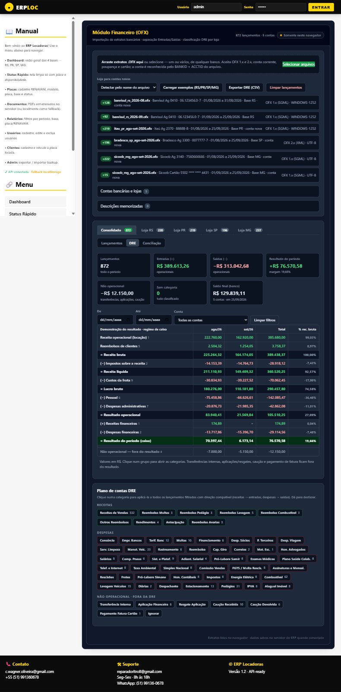
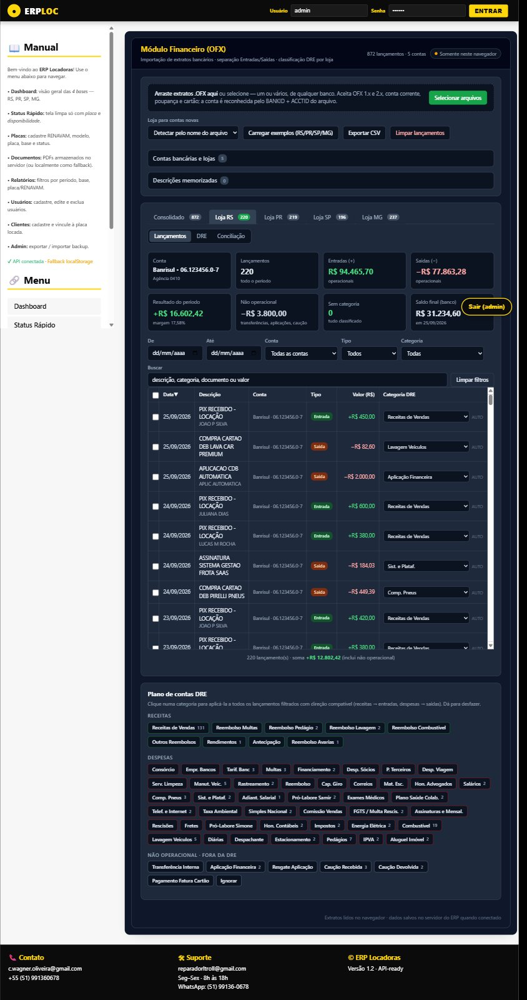
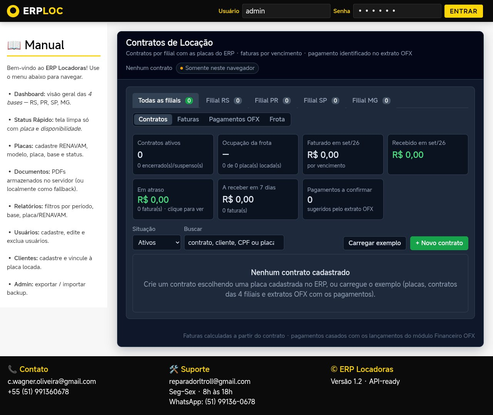
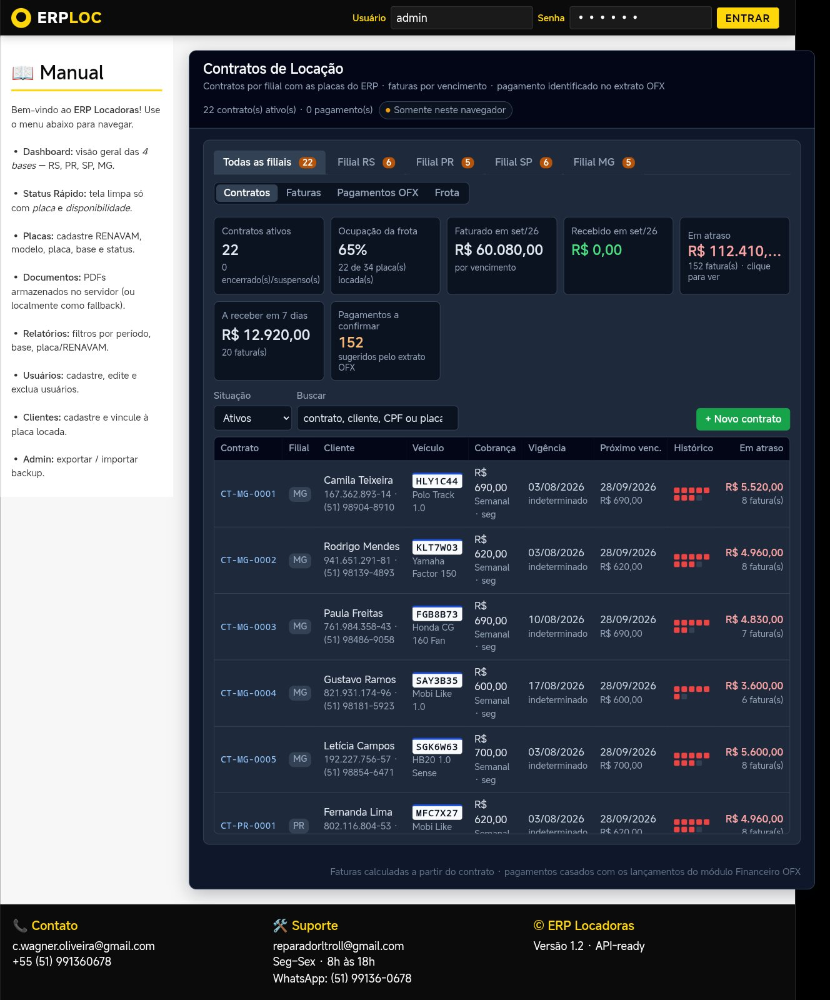
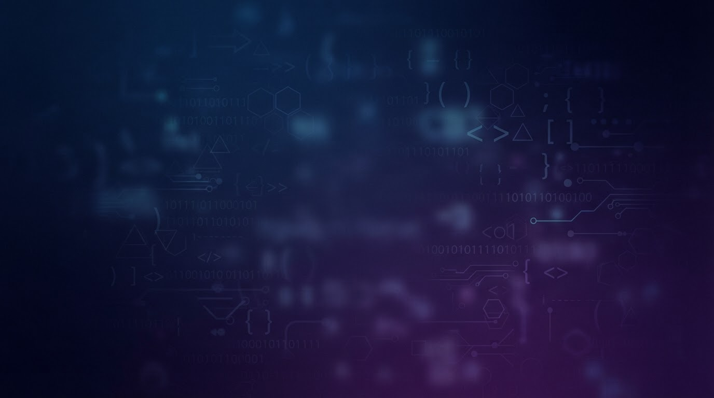
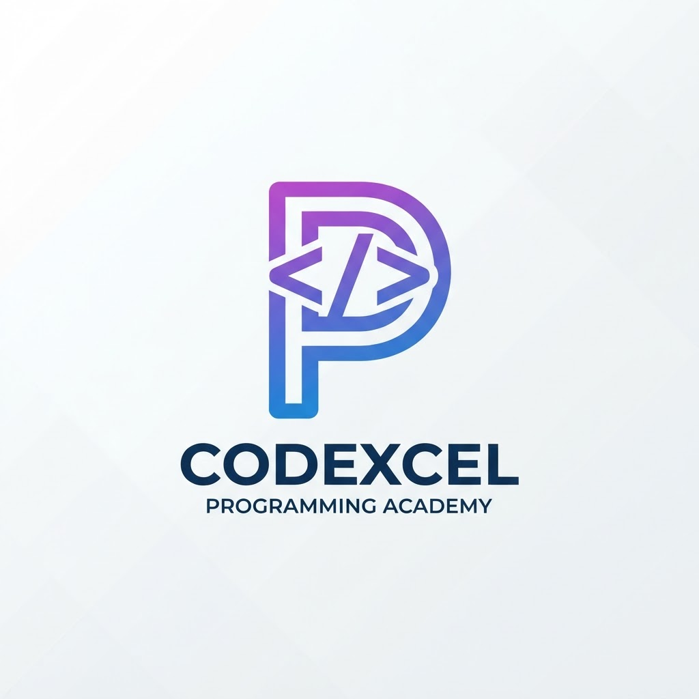
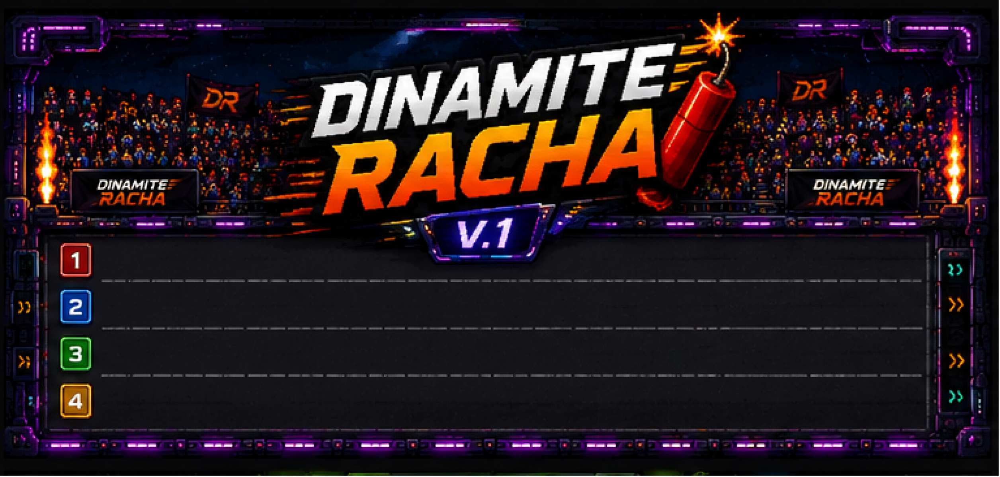

ERP Locadoras
Plataforma para gestão de locadora de veículos, evoluída com módulos financeiro, contratos e fiscal.
Conhecer projeto →Analista de sistemas e administrador, com foco em desenvolvimento de software, gestão, controladoria, finanças e automação de processos.
Uma apresentação objetiva para recrutadores, clientes e conexões profissionais.
Minha formação combina Administração e Análise e Desenvolvimento de Sistemas, com especializações voltadas a Controladoria e Finanças e Engenharia de Software.
Nos projetos, busco unir modelagem de processos, experiência do usuário, programação, banco de dados e regras de negócio para criar sistemas que sejam úteis na operação real.
Projetos desenvolvidos para praticar e aplicar programação, arquitetura, dados, processos e regras de negócio.


Plataforma para gestão de locadora de veículos, evoluída com módulos financeiro, contratos e fiscal.
Conhecer projeto →

Extensão do ERP com importação e conciliação OFX, classificação de lançamentos, faturas de contratos e rotinas fiscais.
Ver detalhes →

Aplicação educacional gamificada para aprendizado de lógica de programação, com desafios, shorts, fórum, perfil e pontuação.
Conhecer projeto →
Jogo desenvolvido em Python/Pygame com menu, fases, adversários, colisões, sons, tempo e ranking persistido em banco de dados.
Conhecer projeto →Projeto web voltado a conteúdos e documentos de privacidade, com página de acesso e materiais relacionados à LGPD.
Conhecer projeto →Da necessidade de negócio até uma solução funcional e organizada.
Mapeamento do problema, usuários, regras de negócio e objetivos do sistema.
Estruturação de dados, módulos, fluxos, telas e responsabilidades.
Implementação incremental com foco em código organizado, persistência e experiência de uso.
Testes, correções, novas funcionalidades e adaptação do sistema às necessidades do negócio.